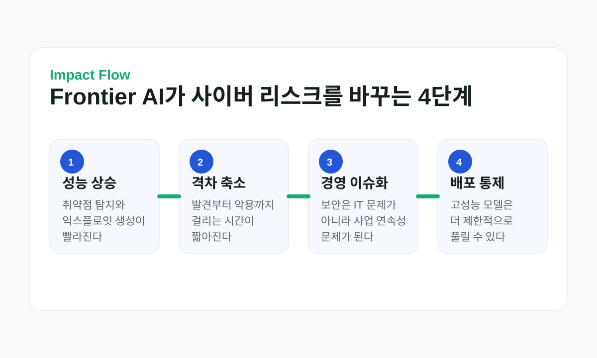

“몇 년이 아니라 몇 달” Five Eyes가 AI 사이버위협을 공개 경고했다
오늘 글로벌 AI 뉴스에서 가장 중요한 건 새 모델 출시가 아니라, 그 모델들이 만들어낼 보안 현실에 대한 집단 경고다. 미국, 영국, 캐나다, 호주, 뉴질랜드의 사이버 기관들은 공식 문서에서 frontier AI가 사이버공격과 방어의 속도를 동시에 바꾸고 있으며, 그 변화의 시간축이 “몇 년”이 아니라 “몇 달”이라고 못 박았다.
Quick Read
이 뉴스는 AI 성능 경쟁보다 배포 통제와 보안 대응 경쟁이 더 중요해졌다는 신호다
오늘 이슈의 핵심은 “어떤 모델이 더 똑똑한가”가 아니다. 국가 정보기관들이 공개적으로 “AI가 기업의 핵심 사이버 리스크를 수개월 안에 재정의할 수 있다”고 말하기 시작했다는 점이다. 이건 규제, 기업 보안 투자, 모델 공개 범위, 사용자 접근 조건을 함께 바꿀 수 있는 종류의 뉴스다.
“The timeline is not years, it is months.”
Five Eyes 공동 문서, 2026년 6월 22일
“AI is not a future consideration – it is already here.”
Five Eyes 공동 문서, 2026년 6월 22일
“America's AI lead is real but shrinking.”
Axios, 2026년 6월 24일
공식 문서가 말한 건 생각보다 더 직설적이다
이번 뉴스에서 가장 중요한 1차 출처는 영국 NCSC가 공개한 PDF 문서 The AI shift in cyber risk: why leaders must act now다. 이 문서는 Five Eyes 소속 5개국 사이버 기관 책임자 명의로 나왔고, AI가 단순히 생산성을 높이는 도구가 아니라 공격자와 방어자 모두의 속도를 끌어올리는 변수라고 적는다.
문서는 변화가 수년 뒤가 아니라 수개월 단위로 다가오며 사이버 위험을 순수 기술 문제로만 다룰 수 없다고 강조한다. 즉, 이 경고는 보안팀 실무 메모가 아니라 CEO와 이사회까지 읽으라는 성격의 문서다.
Impact Flow
눈으로 보면 더 분명한 영향 경로
취약점 탐지, 익스플로잇 작성, 자동화된 공격 시나리오가 더 빨라진다.
취약점 발견부터 실제 악용까지 걸리는 시간이 짧아진다.
보안은 IT 비용이 아니라 운영 연속성과 시장 신뢰의 문제로 올라온다.
고성능 모델은 더 제한적으로 배포되거나 정부 평가와 연동될 수 있다.

왜 이 경고가 중요한가
같은 날 시장성 있는 기사로는 Anthropic-Micron 파트너십, OpenAI의 보안 모델 확대 배포, Google 차기 모델 일정 이슈도 있었다. 하지만 그런 뉴스는 특정 회사의 사업 전략에 가깝다. 반면 Five Eyes 경고는 AI 산업 전체의 배포 방식과 보안 투자 방향을 건드린다.
특히 Axios는 이 경고를 미국의 AI 우위 약화와 연결해 읽었고, Guardian과 TechRadar는 사이버공격 실전성에 초점을 맞췄다. 공식 문서와 주요 매체의 해석이 한 방향으로 수렴한다는 점에서, 기업과 정부가 AI 보안을 별도 기술 이슈가 아니라 경영 리스크로 다루기 시작했다는 점이 중요하다.
지금 기업과 사용자에게 바로 보이는 변화는 무엇인가
공격자가 가장 먼저 얻는 것은 속도와 규모다
현재의 생성형 AI가 숙련된 공격자를 완전히 대체한다고 단정할 근거는 부족하다. 그러나 공개된 조직 정보 수집, 피싱 문안 현지화, 악성 스크립트 수정, 취약점 후보 탐색과 로그 분석을 빠르게 할 수 있다. 각각은 새 능력이라기보다 기존 공격의 비용을 낮추는 효과다.
진입 장벽이 낮아지면 더 많은 공격자가 더 많은 대상을 동시에 시험할 수 있다. 완벽한 익스플로잇을 만드는 모델보다, 수천 개 조직의 노출 서비스를 찾고 맞춤형 메시지를 보내며 실패한 코드를 반복 수정하는 모델이 단기적으로 더 큰 피해를 낼 수 있다.
프런티어 모델이 복잡한 취약점을 독자적으로 발견하고 악용하는 능력은 빠르게 발전하지만, 환경 설정과 실제 네트워크 접근, 권한 상승, 흔적 은폐에는 여전히 도구와 인간 판단이 필요하다. ‘몇 달’이라는 경고는 특정 날짜의 자동 해킹 예언보다 보안 가정의 유효기간이 짧아졌다는 의미로 읽어야 한다.
방어자도 같은 AI를 쓸 수 있지만 자동 승리는 아니다
보안팀은 코드와 설정의 취약점 탐지, 경보 분류, 사고 타임라인 작성, 패치 초안과 위협정보 번역에 AI를 활용할 수 있다. 방어자는 시스템 로그와 자산 목록이라는 내부 데이터를 갖고 있어 맥락 면에서 유리하다. 반복 조사 시간을 줄이면 실제 대응과 복구에 더 많은 시간을 쓸 수 있다.
문제는 방어자의 조직 속도다. AI가 약점을 찾아도 자산 소유자를 모르고, 테스트 환경이 없고, 운영 중단을 승인받지 못하면 패치는 늦어진다. 공격자는 한 번 성공하면 되지만 방어자는 수많은 시스템을 안정적으로 바꿔야 한다. 기술보다 자산 관리와 의사결정이 병목이 된다.
기업이 수개월 안에 먼저 바꿀 다섯 가지
첫째는 인터넷에 노출된 자산과 관리자 계정의 목록을 최신화하는 일이다. 둘째는 피싱에 강한 다중인증과 최소 권한, 셋째는 실제 악용 중인 취약점의 신속한 패치다. 넷째는 오프라인·불변 백업과 복구 훈련, 다섯째는 공급망과 SaaS 사고를 포함한 비상 연락망이다.
이 항목들은 AI 전용 신기술이 아니다. AI가 공격 속도를 높일수록 오래 알려진 기본 통제의 미비가 더 빨리 악용되기 때문에 우선순위가 올라간다. 고가의 AI 보안 제품을 사기 전에 자산·신원·패치·백업이 실제로 작동하는지 확인해야 한다.
이메일과 협업 도구에는 임원·거래처 사칭을 가정한 결제 승인 절차가 필요하다. 음성·영상 딥페이크가 정교해져도 별도 채널 재확인, 다중 승인, 거래 한도 같은 업무 통제가 있으면 피해를 줄일 수 있다. 직원에게 가짜를 눈으로 판별하라고만 맡겨서는 안 된다.
이사회가 받아야 할 보고서도 달라져야 한다
공격 시도 수나 차단 건수만으로는 준비도를 알기 어렵다. 핵심 시스템의 다중인증 적용률, 중대 취약점 패치 시간, 백업 복구 성공률, 탐지부터 격리까지 걸린 시간, 외부 공급자 사고 대응 시간을 보고해야 한다. AI 관련 위협은 이 지표를 얼마나 악화시키거나 개선했는지로 연결해야 한다.
보안 책임도 명확해야 한다. 모델을 업무에 도입한 부서, AI 플랫폼 운영팀, 최고정보보안책임자와 사업 책임자가 사고 시 어떤 결정을 내리는지 정해야 한다. 사이버 위험을 기술팀에만 맡길 수 없다는 공동성명의 메시지는 예산보다 의사결정 구조에 가깝다.
모델 개발사에는 공개 전 평가와 단계적 배포가 요구된다
고성능 모델이 취약점 발견과 공격 자동화에서 임계점을 넘으면 개발사는 일반 공개 전에 독립 평가, 레드팀, 위험 기능 제한과 악용 감시를 해야 한다. 초기에는 신원이 확인된 보안 파트너에게 제공하고 방어용 사용 사례와 완화책을 먼저 개발하는 단계적 공개가 가능하다.
제한은 투명해야 한다. 어떤 능력과 평가에서 문턱을 넘었는지, 누가 접근할 수 있으며 언제 범위를 넓힐지 알려야 한다. 그렇지 않으면 정부와 대기업만 강력한 방어 도구를 갖고 독립 연구자는 검증하지 못하는 격차가 생긴다.
한국은 Five Eyes 경고를 공급망 경고로 읽어야 한다
한국은 Five Eyes 회원국은 아니지만 금융·통신·반도체·자동차·방산 공급망이 다섯 나라와 깊게 연결돼 있다. 한 국가에서 발견된 취약점이 국내 장비와 오픈소스에 그대로 존재할 수 있고, 협력사의 계정 침해가 한국 본사로 이어질 수 있다. 위협정보와 패치 조율 채널을 실무적으로 연결할 필요가 있다.
국내 기관은 KISA와 산업별 정보공유 체계를 통해 AI가 찾은 취약점의 검증·공개·패치 기준을 마련해야 한다. 중소 협력사는 전담 보안팀이 없으므로 공용 스캔, 긴급 완화 가이드와 복구 지원이 필요하다. 대기업만 방어력을 높이면 공급망의 약한 고리로 공격이 이동한다.
경고와 예측의 경계
공동성명은 위험이 빠르게 변한다고 경고하지만 특정 모델이 언제 어떤 피해를 낸다고 예측하지 않는다. Guardian과 TechRadar가 소개한 개별 모델 사례는 능력 변화의 맥락이지 Five Eyes 전체가 해당 회사의 모든 평가를 공식 인증했다는 뜻은 아니다.
공격 능력의 발전 속도에는 불확실성이 크지만 준비를 미룰 이유는 없다. 자산 목록, 신원 보호, 패치와 백업은 모델 전망이 빗나가도 가치가 남는 투자다. 예측을 확정 사실로 부풀리지 않으면서 후회가 적은 기본 통제를 먼저 강화하는 것이 합리적이다.
내가 보는 핵심
Five Eyes 경고의 핵심은 AI가 곧 모든 보안을 무너뜨린다는 말이 아니다. 공격자가 조사·작성·반복에 쓰는 시간을 줄이면서 조직의 느린 패치와 승인 절차를 더 큰 약점으로 만든다는 경고다. 보안의 시간표가 기술 개발보다 운영 속도에 맞춰 다시 짜여야 한다.
가장 효과적인 대응은 공포에 맞춘 AI 제품 구매가 아니라 신원·자산·패치·복구의 기본을 측정하고, 방어용 AI를 검증된 절차에 연결하는 것이다. 모델 개발사는 고위험 사이버 능력을 단계적으로 배포하고, 정부는 동맹과 민간에 필요한 위협정보를 빠르게 공유해야 한다.
출처와 바로 확인 링크
- NCSC 공식 페이지: The AI shift in cyber risk: why leaders must act now
- Five Eyes 공식 PDF 원문
- Axios: Behind the Curtain / Global AI wars
- The Guardian: AI models capable of devastating attacks...
- TechRadar: Five Eyes warns AI cyberattack models are only months away
- The Australian: Business leaders warned of AI cyber threat
- Canadian Centre for Cyber Security: national follow-up statement
- UK NCSC: assessment of AI's impact on cyber threats through 2027
Comments
댓글